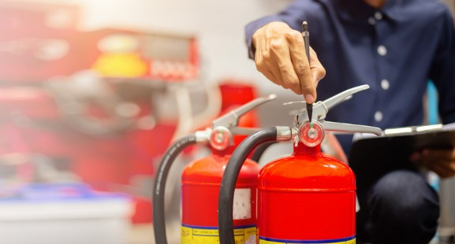

Yangın Anında Yapılacaklar: Temel Bilgiler ve İpuçları
Yangınlar, hayatımızda karşımıza çıkabilecek tehlikeli ve yıkıcı olaylardır. Yangın sırasında doğru hareket etmek, hem kendi can güvenliğimizi hem de çevremizdekilerin güvenliğini sağlamada kritik rol oynar. Bu yazıda, yangın anında yapılması gerekenler hakkında temel bilgiler ve ipuçları sunulacaktır.
1. Yangın Durumunda Panik Yapmayın
Yangın anında panik yapmamak çok önemlidir. Sakin kalın ve doğru hareket etmeye odaklanın. Panik, hem hareket kabiliyetinizi hem de diğer insanların güvenliğini tehdit edebilir.
2. Yangına Müdahale Edilebilecekse, Temiz Bir Yolla Yapın
Yangın, eğer henüz küçükse ve güvenli bir şekilde müdahale edilebiliyorsa, ilk olarak yangın söndürücü veya yangın hortumu kullanarak müdahale edin. Ancak, yangın büyükse, kesinlikle müdahale etmeye çalışmayın. Güvenli bir yere çıkın ve yardım çağırın.
3. Acil Durum Numaralarını Arayın
Yangın başladığı anda hemen 112 gibi yerel acil durum numarasını arayın. Yangının büyüklüğü ve tam adres bilgilerini vererek yardım isteyin. Ayrıca yangının hangi kat veya odada olduğu hakkında bilgi verin.
4. Kapı ve Pencereleri Kapatın
Yangın hızla yayıldığından, kapı ve pencereleri kapatarak alevlerin ve dumanın yayılmasını engellemeye çalışın. Eğer evin içinde duman varsa, başınızı alçakta tutarak nefes almaya devam edin.
5. Dumanla Dolmuş Bir Yerden Çıkmayın
Dumanın olduğu bir alanda kalmak son derece tehlikelidir. Eğer evde ya da binada duman varsa, en yakın çıkışa yönelin. Eğer kapılar ısındıysa, camlardan yardım edin veya balkonlara çıkın.
6. Asansör Kullanmaktan Kaçının
Yangın durumunda asansör kullanmak son derece tehlikelidir. Asansör, yangının daha hızlı yayılmasına veya arızalanarak içinde mahsur kalmanıza neden olabilir. Merdivenleri kullanarak binayı terk edin.
7. Evdeki Diğer Kişileri Uyandırın ve Yardım Edin
Yangın başladığında evdeki diğer kişileri uyandırarak, onları dışarıya güvenli bir şekilde çıkarmaya yardımcı olun. Özellikle yaşlılar, çocuklar veya engelli bireylerin yardıma ihtiyaç duyabileceğini unutmayın.
8. Yangından Uzaklaş
Yangından uzaklaşmak, yangın sırasında hayatta kalmanın en önemli adımlarından biridir. Yangının bulunduğunuz bölgeyi sarmaya başlamadan önce, güvenli bir alana yönelin. Eğer binadan çıkabiliyorsanız, en yakın güvenli çıkışı kullanarak binayı terk edin. Yangın tehlikesi devam ediyorsa, uzaklaşmanız gerektiği unutulmamalıdır. Yangından uzaklaşırken, dumanın olduğu alanlardan kaçınarak, kapalı alanlarda kalmamaya dikkat edin. Yardım ekipleri geldiğinde, onları yönlendirebilmek için güvenli bir noktada bekleyin.